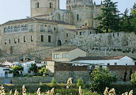

Tramo fluvial urbano de unos 6 km de longitud con abundante veg-etación riparia y palustre. Incluye varias islas fluviales con bosque de ribera, siendo las especies más abundantes, álamo, chopo y sauce blanco. También cuen-ta con varios parques urbanos y áreas ajardinadas. Limita princi-palmente con el casco urbano de la ciudad y con campos de regadío de las vegas inmediatas
Las riberas del Duero tienen gran interés para la observación de ardeidas, como el martinete y el avetorillo, y gran variedad de especies forestales y palustres, como el torcecuello, el pico menor, el carricero tordal y el pájaro moscón. Acoge un elevada densidad de milano negro nidficante y varias parejas reproductoras de águila calzada, entre otras rapaces. Hay una colonia de cría de garza real e importantes dormideros de cormorán grande y garcilla bueyera. Cuenta con poblaciones de reptiles y mamíferos amenazados, como los galápagos leproso y europeo, la rata de agua y la nutria.
